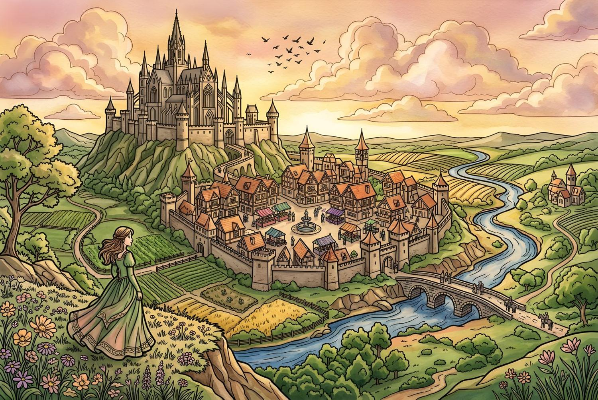
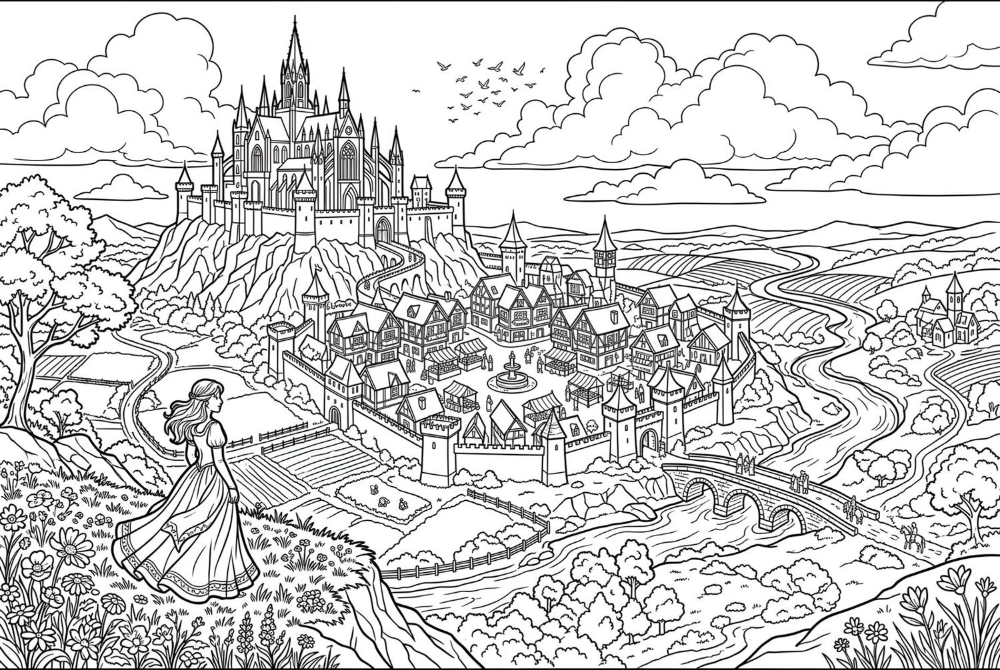

Tides of Aethermoor
An ocean adventure with Nerissa, where your palette shapes the moods of the sea and the fates of its sailors.
Story coloring books for grown-ups
Richly detailed pages, a story that unfolds chapter by chapter, and a secret: every color you choose quietly shapes the ending. No dice. No rulebook. Just you, your pencils, and an evening in another world.

Castles with a hundred windows, market stalls, rolling fields, wildflowers on the hillside. Each illustration is drawn with enough detail to fill a whole evening, or a whole week of evenings.

If you love intricate coloring pages and a good story, this is both at once.
Stained glass, tapestries, scales, and stonework. Plenty of room for blending, shading, and your favorite techniques.
Each chapter ends with a reason to start the next. It turns a coloring session into a little ritual you look forward to.
Your palette is your vote. Warm, cool, or earthy, the colors you reach for decide how the tale ends.
Three endings means three reasons to print the pages again and try a completely different palette.
It looks like a coloring book and plays like a story. Colored pencils, markers, or a digital brush all work.
Every chapter asks you to color something that matters: a banner, a dragon's scales, a gown, a cloak. Choose whatever colors you love.
Behind the scenes, each color family quietly nudges one of three hidden paths. You won't know where you stand until the end.
The final chapter reveals which of three endings your colors earned. Recolor and play again to find the others.

In the kingdom of Thornfield, a dragon stirs beneath the ancient mountain. You are Elara, and how you color your journey decides whether Varathos becomes a destroyer, an ally, or a legend.
Play it digitally, or print the PDF and use your own pencils.
Each portrait starts as line art. Tap one to see it colored.
Our hero. When the dragon stirs, her choices, and your colors, decide what Thornfield becomes.
Rules Thornfield from the castle on the hill, and calls his council together when danger comes.
Sets out on the quest when the kingdom needs him most. You choose the color of his cloak.
Knows every road in Thornfield, and a few that aren't on any map. Color her scarf however you like.
He has slept beneath the ancient mountain for a very long time. Destroyer, ally, or legend? That part is up to you.
These colors are only one possibility. In your copy, they're whatever you decide.
Kingdoms of Color is the first book in a growing library. Each world brings a new hero and a new story to color into life.
An ocean adventure with Nerissa, where your palette shapes the moods of the sea and the fates of its sailors.
Help Pip color magical ingredients and brew impossible potions for a village in need. Mind the frogs.
The mailing list is almost ready. Until then, send a note that says "Add me" to this address and you'll be on it from day one.
coloringworlds@coloringworlds.networkQuestions about the books, or want to follow along as they come together? I'd love to hear from you.
coloringworlds@coloringworlds.network